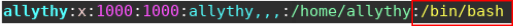

Neste artigo, vamos aprender 3 maneiras de alterar o Shell padrão de um usuário no GNU/Linux. O Shell é interpretador de comandos e é a uma camada entre o Kernel e o usuário. O Shell é simplesmente o programa que lê o comando que você digitou e converte-o em uma forma mais simplificada e legível para o Sistema GNU, diminuindo o tempo gasto pelo Sistema GNU (ou kernel) na execução deste comando. Existem vários tipos de Shells, como: bash, sh, ksh, zsh, fish e muitos outros.
Vamos primeiro listar todos os Shells disponíveis em seu sistema GNU/Linux, digite:
cat /etc/shells
O Shell padrão para a maioria dos Sistemas GNU/Liunx é o Bash (/ bin / bash). Antes de prosseguir, observe que:
– Um usuário pode alterar seu Shell para qualquer Shell que esteja listado no arquivo / etc/shells. – Somente o superusuário (root) ou usuário com privilégio de superusuário pode alterar o Shell.
1. usermod
usermod é um utilitário para modificar os detalhes da conta de um usuário, armazenado no arquivo / etc/passwd e a opção -s ou --shell é usada para alterar o Shell de login do usuário.
Neste exemplo, primeiro verificamos as informações da conta do usuário para ver seu Shell de login padrão.
grep allythy /etc/passwd
Em seguida, altere seu shell de login de /bin/bash para /bin/sh da seguinte maneira:
sudo usermod --shell /bin/bash allythy
2. chsh
chsh é um utilitário de linha de comando para alterar o Shell de um usuário. Você alterar o Shell passando a opção -s ou --shell, depois informando o Shell que vai ser usado e o nome do usuário.
sudo chsh --shell /bin/sh allythy
3. Alterando diretamente o arquivo /etc/passwd
Neste método, basta abrir o arquivo /etc/passwd usando qualquer editor de texto e alterar o Shell do usuário que você queira.
sudo vim /etc/passwd

Quando tiver feito a edição, salve e feche o arquivo.